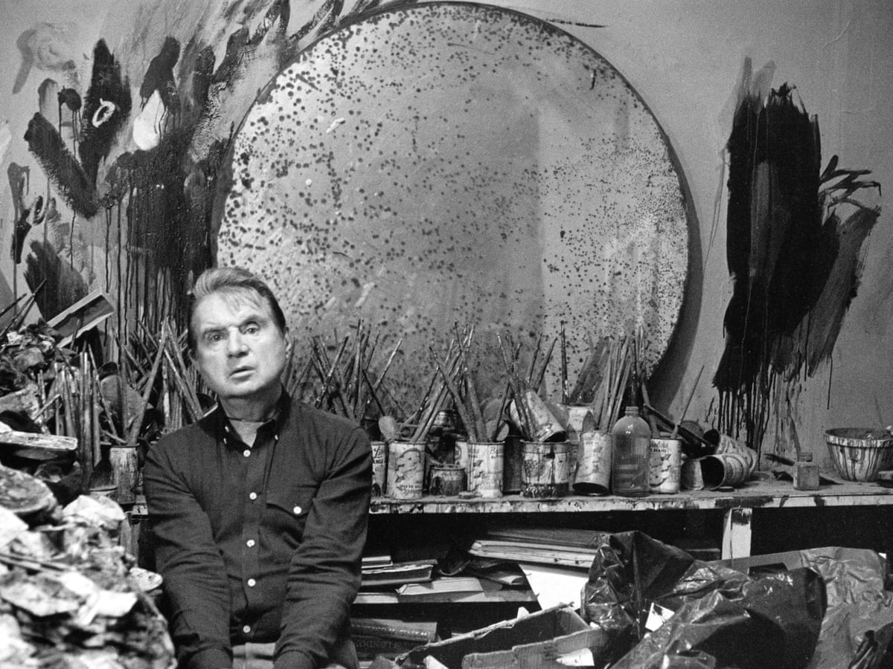

Francis Bacon was born in 1909 in Dublin and died in 1992 in Madrid. Bacon, one of the greatest painters of the twentieth century, remained devoted to figuration and portraiture throughout his career. In his art, modernity and tradition converge. His ectoplasmic figures and faces strain like savage forces of nature against shallow fields of intense color and the sketchy armatures that bind them back to the picture plane. In his gut-wrenching serialization of the human body and its sensations, he showed himself to be the unflinching witness of the hysterical reality of the body and the primal fear of those who inhabit it. Although Bacon's aggressive deformations suggest an intense level of existential alienation, he was actually intimately connected to most of his sitters, among them his lover George Dyer, Henrietta Moraes, who owned the Colony Club, Bacon's favorite drinking spot, and Isabel Rawsthorne, the renowned artist's muse. He often painted his subjects at a remove, from photographs, although the resulting portraits are far from being objective or idealized images. Lisa Sainsbury, a close friend and patron, sat for him every week for two years while he made a concerted effort to work directly from life. Of the eight portraits of her that Bacon completed, he destroyed several and Head of a Woman (Lisa Sainsbury) (1955–57) is one of only three remaining.
Francis Bacon produced some of the most iconic images of wounded and traumatized humanity in post-war art. Borrowing inspiration from Surrealism, film, photography, and the Old Masters, he forged a distinctive style that made him one of the most widely recognized exponents of figurative art in the 1940s and 1950s. Bacon concentrated his energies on portraiture, often depicting habitues of the bars and clubs of London's Soho neighborhood. His subjects were always portrayed as violently distorted, almost slabs of raw meat, that are isolated souls imprisoned and tormented by existential dilemmas. One of the most successful British painters of the 20th century, Bacon's reputation was elevated further during the "art world's" widespread return to painting in the 1980s, and after his death he became regarded by some as one of the world's most important painters.
Accomplishments